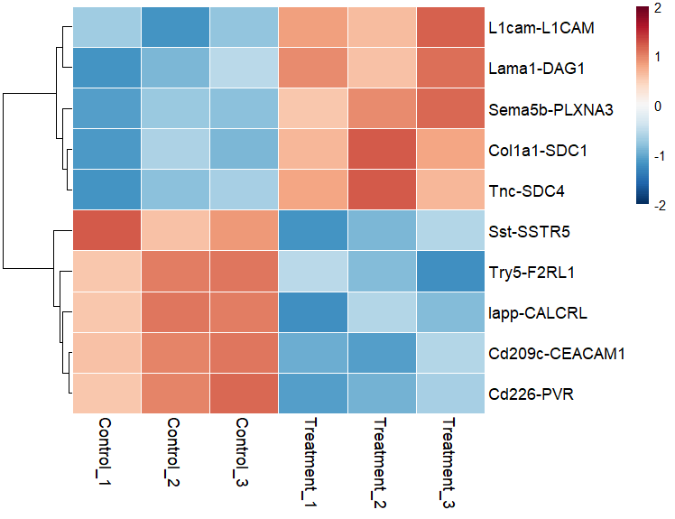
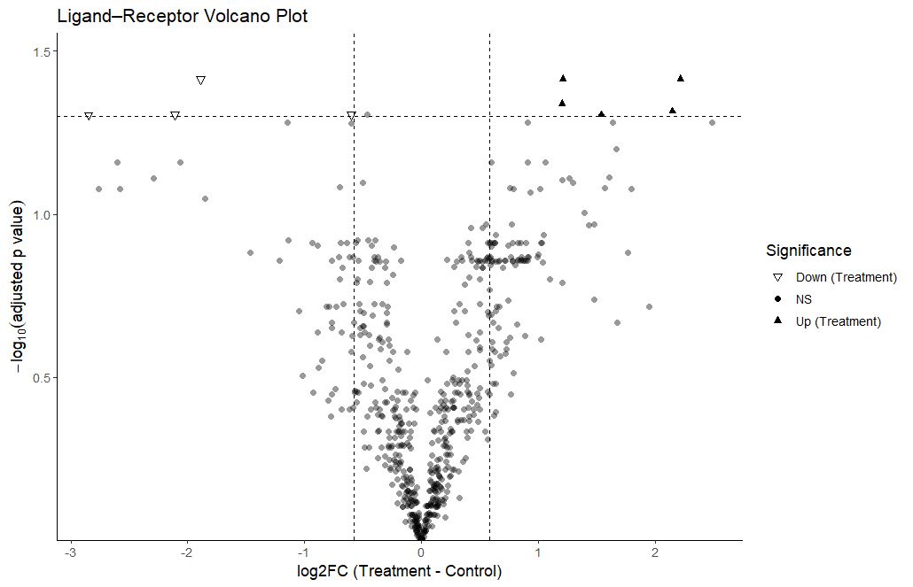

Overview
ChimeChat is an R package that streamlines cross-species ligand–receptor (L–R) analysis when you have paired human and mouse bulk RNA-seq datasets. It automates:
Mapping mouse genes to human orthologs
VST transformation of human and mouse raw counts (via DESeq2)
Merging both species into a unified gene expression matrix
Ligand–receptor scoring
Statistical testing
Heatmap visualization of L–R pairs
Installation
1. Install dependencies
install.packages("BiocManager")
BiocManager::install(c("DESeq2", "biomaRt", "SummarizedExperiment"))
install.packages(c("dplyr", "tibble", "tidyr", "readxl", "pheatmap", "RColorBrewer"))
remotes::install_github("sqjin/CellChat")2. Install ChimeChat from GitHub
install.packages("remotes")
remotes::install_github("m03077yhtnt/ChimeChat")Example
library(ChimeChat)
# Step 1: Merge and VST
ChimeData <- run_ChimeDB(
human_file = "Human_CountData.xlsx",
mouse_file = "Mouse_CountData.xlsx"
)
# Step 2: LR scores
LR_scores <- get_ChimeLRscore(
combined = ChimeData$combined,
direction = "mouse_ligand_human_receptor",
db_scope = c("secreted","contact","ecm"),
rename_to_mouse = TRUE,
ortholog_map = ChimeData$ortholog_map
)
# Step 3: Statistics
stat_results <- get_ChimeStatistics(LR_scores)
# Step 4: Heatmap
run_ChimeHeatmap(LR_scores, stat_results, n_top = 20)